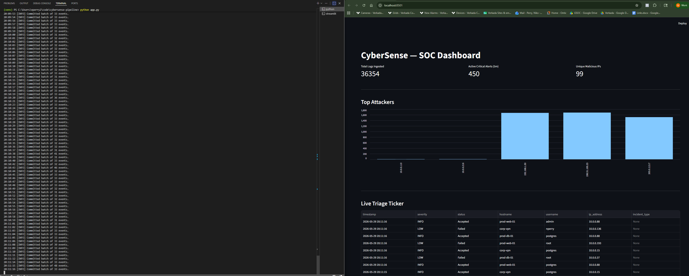
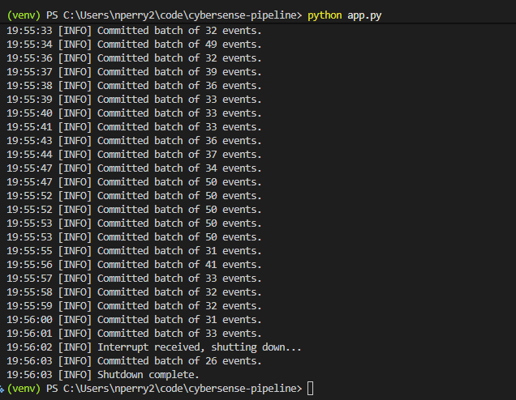
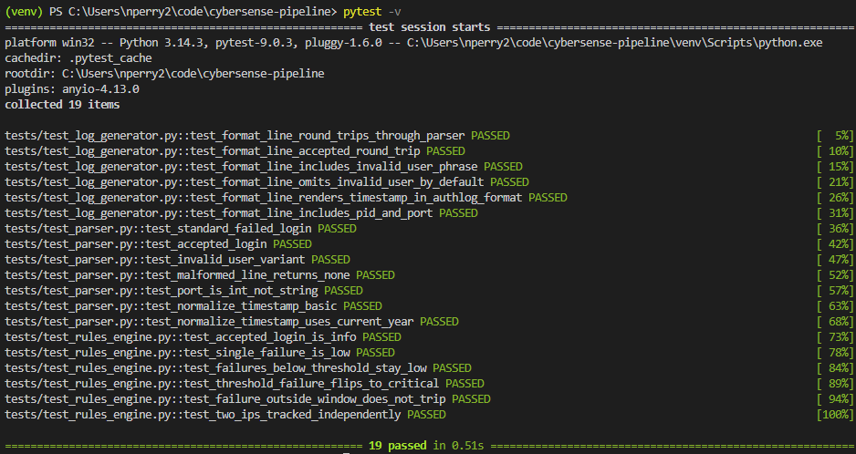

Project Overview
An end-to-end security analytics pipeline that mirrors how a Security Operations Center (SOC) ingests and triages authentication events. A multi-threaded producer generates realistic Linux auth.log lines, a regex-driven pipeline parses and risk-scores each event, results are persisted to an indexed datastore, and a Streamlit analyst dashboard surfaces KPIs, top attackers, and a live triage ticker — all updating in real time.
Each layer is decoupled through a bounded queue, so the producer can run at full speed without blocking the database, and the dashboard queries independently of ingestion.
Technologies Used
Architecture
one worker per hostname
(prod-web-01, prod-db-01, corp-vpn)
Pipeline (single consumer) Parser (regex named groups → dict)
→ Rules Engine (per-IP sliding window)
Storage SQLite (dev) / Postgres (prod)
indexes: timestamp, ip_address
Analyst Interface Streamlit Dashboard (separate process)
KPIs · top attackers · live ticker
Pipeline Layers
- Ingestion (
pipeline/log_generator.py): AThreadPoolExecutorwith 3–4 workers, each simulating a distinct host, emits realisticauth.loglines onto a sharedqueue.Queue - Processing (
pipeline/parser.py): A single canonical regex with named capture groups (timestamp,hostname,status,username,ip_address,port) extracts and normalizes each line into a structured event - Threat Intelligence (
pipeline/rules_engine.py): An in-memory per-IP sliding window of failed attempts detects brute-force attacks — 5+ failures within 60 seconds escalates an event toCRITICAL - Storage (
database/): A singleSecurityEventORM model written through SQLAlchemy, with indexes ontimestampandip_addressto keep dashboard aggregates cheap - Visualization (
dashboard.py): A Streamlit SOC interface with KPI metric cards, a top-attackers bar chart, and a live triage ticker that highlightsCRITICALrows
Threat Detection Logic
The rules engine maintains a sliding window of failed login timestamps per source IP. For each Failed event it appends the timestamp and evicts anything older than 60 seconds:
# On each Failed event:
window = failed_attempts[ip]
window.append(now)
window = [t for t in window if now - t <= 60s]
if len(window) >= 5:
severity = "CRITICAL"
incident_type = "Brute Force Attack"
else:
severity = "LOW" # "INFO" for successful logins
The Parsing Regex
A single canonical pattern with named groups handles every log line:
r'(?P<hostname>[\w-]+)\s+sshd\[\d+\]:\s+'
r'(?P<status>Failed|Accepted)\s+password\s+for\s+'
r'(?:invalid\s+user\s+)?(?P<username>\w+)\s+'
r'from\s+(?P<ip_address>[\d\.]+)\s+port\s+(?P<port>\d+)'
Applied to a line like May 28 14:05:23 server1 sshd[12345]: Failed password for invalid user root from 192.168.1.50 port 54321 ssh2, it captures the timestamp, hostname, status, targeted username, source IP, and port in one pass.
Database Schema
id = Integer, PK, autoincrement
timestamp = DateTime, NOT NULL, INDEXED
hostname = String(50), NOT NULL
status = String(20), NOT NULL # Accepted | Failed
username = String(50), NOT NULL
ip_address = String(45), NOT NULL, INDEXED
severity = String(15), NOT NULL # INFO | LOW | CRITICAL
incident_type = String(50), NULLABLE # e.g. Brute Force Attack
The pipeline writes through SQLAlchemy, so the same model code targets both SQLite and Postgres with only a DSN change. Local development uses SQLite (sqlite:///cybersense.db) for zero-infrastructure setup; docker-compose.yml defines the Postgres + pipeline + dashboard production deployment.
Quick Start
$ cd cybersense-pipeline
$ python -m venv venv && source venv/bin/activate
$ pip install -r requirements.txt
# Initialize the local SQLite database
$ python -m database.models
# Start the ingestion pipeline (generator → parser → rules → DB)
$ python app.py
# In a separate terminal, launch the analyst dashboard
$ streamlit run dashboard.py
Running via Docker (production target)
The docker-compose.yml brings up Postgres, the pipeline, and the dashboard — each in its own networked container:
# Dashboard available at http://localhost:8501
$ docker compose down # tear down, keep data
$ docker compose down -v # also wipe the Postgres volume
Screenshots

Producer terminal streaming batched commits (left) and the analyst dashboard updating in real time (right)

Operator-console-style structured logging with batched commits and graceful Ctrl+C shutdown

19 tests covering the parser, rules engine, and log generator
Skills Demonstrated
- Concurrency: Multi-threaded producer/consumer design with a bounded queue decoupling ingestion from processing
- Text processing: Regex with named capture groups for structured log parsing and normalization
- Stateful detection: Per-IP sliding-window algorithm for real-time brute-force identification
- Data engineering: SQLAlchemy ORM with dialect-agnostic models and strategic indexing
- Containerization: Multi-service Docker Compose deployment (Postgres + pipeline + dashboard)
- Visualization: Real-time analyst dashboard with Streamlit and pandas
- Testing: 19-test pytest suite across parser, rules engine, and generator
Project Highlights
- SOC-style workflow: Models the real ingestion → triage → visualization loop of a security operations center
- Decoupled layers: A bounded queue lets the producer run full-speed without blocking storage or the dashboard
- Dev/prod parity: Same ORM code runs on SQLite locally and Postgres in containers — only the DSN changes
- Real-time triage: Brute-force attacks escalate to CRITICAL within a 60-second window and surface immediately on the dashboard